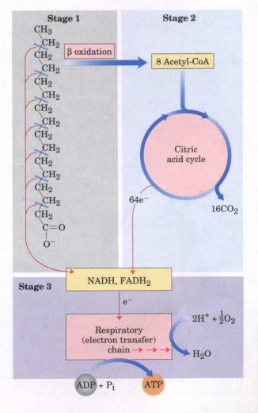
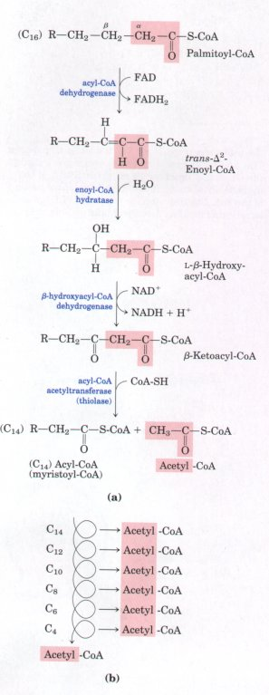
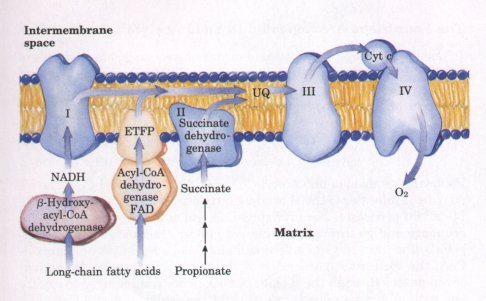
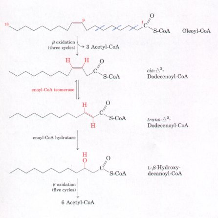
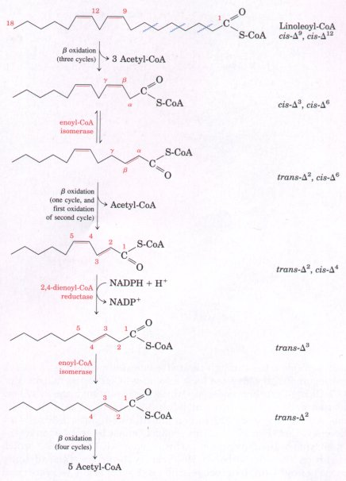

myristoyl-CoA + acetyl-CoA + FADH2 + NADH + H+ ............ (16-2)
myristoyl-CoA + acetyl-CoA + FADH2 + NADH + H+ ............ (16-2) | Mitochondrial oxidation of fatty acids
takes place in three stages (Fig. 16-7). In the first
stage-β oxidation-the fatty acids undergo oxidative
removal of successive two-carbon units in the form of
acetyl-CoA, starting from the carboxyl end of the fatty
acyl chain. For example, the 16-carbon fatty acid
palmitic acid (palmitate at pH 7) undergoes seven passes
through this oxidative sequence, in each pass losing two
carbons as acetyl-CoA. At the end of seven cycles the
last two carbons of palmitate (originally C-15 and C-16)
are left as acetyl-CoA. The overall result is the
conversion of the 16-carbon chain of palmitate to eight
two-carbon acetyl-CoA molecules. Formation of each
molecule of acetyl-CoA requires removal of four hydrogen
atoms (two pairs of electrons and four H+) from the fatty
acyl moiety by the action of dehydrogenases. In the second stage of fatty acid oxidation the acetyl residues of acetyl-CoA are oxidized to CO2 via the citric acid cycle, which also takes place in the mitochondrial matrix. Acetyl-CoA derived from fatty acid oxidation thus enters a final common pathway of oxidation along with acetyl-CoA derived from glucose via glycolysis and pyruvate oxidation (see Fig. 15-1). The first two stages of fatty acid oxidation produce the reduced electron carriers NADH and FADH2, which in the third stage donate electrons to the mitochondrial respiratory chain, through which the electrons are carried to oxygen (Fig. 16-7). Coupled to this flow of electrons is the phosphorylation of ADP to ATP, to be described in Chapter 18. Thus energy released by fatty acid oxidation is conserved as ATP. We will now look in more detail at the first stage of fatty acid oxidation, for the simple case of a saturated chain with an even number of carbons, and for the slightly more complicated cases of unsaturated and odd-number chains. We then consider the regulation of fatty acid oxidation, and the β-oxidative processes occurring in organelles other than mitochondria. β Oxidation of Saturated Fatty Acids Has Four Basic StepsFour enzyme-catalyzed reactions are involved in the first stage of fatty acid oxidation (Fig. 16-Sa). First, dehydrogenation produces a double bond between the α and β carbon atoms (C-2 and C-3), yielding a trans-Δ2-enoyl-CoA. The symbol Δ2 designates the position of the double bond. (It may be helpful to review fatty acid nomenclature, described on p. 240.) The new double bond has the trans configuration; recall that naturally occurring unsaturated fatty acids normally have their double bonds in the cis configuration. We shall consider the significance of this difference later. The enzyme responsible for this first step, acyl-CoA dehydrogenase, includes FAD as a prosthetic group. The electrons removed from the fatty acyl-CoA are transferred to the FAD, and the reduced form of the dehydrogenase then immediately donates its electrons to an electron carrier, the electron-transferring flavoprotein (ETFP). ETFP, an integral protein of the inner mitochondrial membrane, is one of the electron carriers of the mitochondrial respiratory chain (Fig. 16-9). The transfer of a pair of electrons from the FADH2 of acyl-CoA dehydrogenase to O2 via the respiratory chain provides the energy for the synthesis of two ATP molecules. The oxidation catalyzed by acyl-CoA dehydrogenase is analogous to succinate dehydrogenation in the citric acid cycle (p. 457); in both reactions the enzyme is bound to the inner membrane, a double bond is introduced into a carboxylic acid between the α and β carbons, FAD is the electron acceptor, and electrons from the reaction ultimately enter the respiratory chain and are carried to O2 with the concomitant synthesis of two ATP molecules per electron pair. |
 Figure 16-7 Stages of fatty acid oxidation. Stage 1: A long-chain fatty acid is oxidized to yield acetyl residues in the form of acetyl-CoA. Stage 2: The acetyl residues are oxidized to CO2 via the citric acid cycle. Stage 3: Electrons derived from the oxidations of stages 1 and 2 are passed to O2 via the mitochondrial respiratory chain, providing the energy for ATP synthesis by oxidative phosphorylation.  Figure 16-8 The fatty acid oxidation (β-oxidation) pathway. (a) In each pass through this sequence, one acetyl residue (shaded in red) is removed in the form of acetyl-CoA from the carboxyl end of palmitate (C16), which enters as palmitoyl-CoA. (b) Six more passes through the pathway yield seven more molecules of acetyl-CoA, the seventh arising from the last two carbon atoms of the 16-carbon chain. Eight molecules of acetyl-CoA are formed in all. |
 |
Figure 16-9 Electrons removed from fatty acids during β oxidation pass into the mitochondrial respiratory chain and eventually to O2. The structures I through IV are enzyme complexes that catalyze portions of the electron transfer to oxygen. Fatty acyl-CoA dehydrogenase feeds electrons into an electron-transferring flavoprotein (ETFP) containing an iron-sulfur center, which in turn reduces a lipid-soluble electron carrier, ubiquinone (UQ, or coenzyme Q). β-Hydroxyacyl-CoA dehydrogenase transfers electrons to NAD+, and the resulting NADH is reoxidized by NADH dehydrogenase (Complex I of the respiratory chain). Propionate produced from odd-chain fatty acids is converted to succinate. Succinate dehydrogenase, which acts in the citric acid cycle (p. 457), feeds electrons into the respiratory chain at Complex II. Cytochrome c (cyt c) is a soluble electron carrier that transfers electrons between Complexes III and IV. All of these transfers are described in detail in Chapter 18. |
In the second step of the fatty acid oxidation cycle (Fig. 16-8a), water is added to the double bond of the trans-Δ2-enoyl-CoA to form the L stereoisomer of β-hydroxyacyl-CoA (also designated β-hydroxyacyl-CoA). This reaction, catalyzed by enoyl-CoA hydratase, is formally analogous to the fumarase reaction in the citric acid cycle, in which H2O adds across an α-β double bond (p. 458).
In the third step, the L-β-hydroxyacyl-CoA is dehydrogenated to form β-ketoacyl-CoA by the action of β-hydroxyacyl-CoA dehydrogenase (Fig. 16-8a); NAD+ is the electron acceptor. This enzyme is absolutely specific for the r. stereoisomer. The NADH formed in this reaction donates its electrons to NADH dehydrogenase (Complex I), an electron carrier of the respiratory chain (Fig. 16-9). Three ATP molecules are generated from ADP per pair of electrons passing from NADH to O2 via the respiratory chain. The reaction catalyzed by β-hydroxyacyl-CoA dehydrogenase is closely analogous to the malate dehydrogenase reaction of the citric acid cycle (p. 459).
The fourth and last step of the fatty acid oxidation cycle is catalyzed by acyl-CoA acetyltransferase (more commonly called thiolase), which promotes reaction of β-ketoacyl-CoA with a molecule of free coenzyme A to split off the carboxyl-terminal two-carbon fragment of the original fatty acid as acetyl-CoA. The other product is the coenzyme A thioester of the original fatty acid, now shortened by two carbon atoms (Fig. 16-8a). This reaction is called thiolysis, by analogy with the process of hydrolysis, because the β-ketoacyl-CoA is cleaved by reaction with the thiol group of coenzyme A.
The carbon-carbon single bond that connects methylene (-CH2-) groups in fatty acids is relatively stable. The β-oxidation sequence represents an elegant solution to the problem of breaking these bonds. The first three reactions of β oxidation have the effect of creating a much less stable C-C bond, in which one of the carbon atoms (the a carbon, C-2) is bonded to two carbonyl carbons. The ketone function on the β carbon (C-3) makes it a good point for nucleophilic attack by -SH of coenzyme A, catalyzed by thiolase. The acidity of the a carbon makes the terminal -CH2-CO-S-CoA a good leaving group, facilitating breakage of the α-β bond.
In one pass through the fatty acid oxidation sequence, one molecule of acetyl-CoA, two pairs of electrons, and four H+ ions are removed from the long-chain fatty acyl-CoA, to shorten it by two carbon atoms. The equation for one pass, beginning with the coenzyme A ester of our example, palmitate, is
Palmitoyl-CoA + CoA + FAD + NAD+ + H2O
myristoyl-CoA + acetyl-CoA + FADH2 + NADH + H+ ............ (16-2)
Following removal of one acetyl-CoA unit from palmitoyl-CoA, the coenzyme A thioester of the shortened fatty acid remains, in this case the 14-carbon myristate. The myristoyl-CoA can now enter the β-oxidation sequence and go through another set of four reactions, exactly analogous to the first, to yield a second molecule of acetyl-CoA and lauroylCoA, the coenzyme A thioester of the 12-carbon laurate. Altogether, seven passes through the β-oxidation sequence are required to oxidize one molecule of palmitoyl-CoA to eight molecules of acetyl-CoA (Fig. 16-8b). The overall equation is
Palmitoyl-CoA + 7CoA + 7FAD + 7NAD+ + 7H2O
8 acetyl-CoA + 7FADH2 + 7NADH + 7H+ ............(16-3)
Each molecule of FADH2 formed during oxidation of the fatty
acid donates a pair of electrons to ETFP of the respiratory chain
(Fig. 16-9); two molecules of ATP are generated during the
ensuing transfer of the electron pair to O2 and the coupled
oxidative phosphorylations. Similarly, each molecule of NADH
formed delivers a pair of electrons to the mitochondrial NADH
dehydrogenase; the subsequent transfer of each pair of electrons
to O2 results in formation of three molecules of ATP. Thus five
molecules of ATP are formed for each two-carbon unit removed in
one pass through the sequence as it occurs in animal tissues,
such as the liver or heart. Note that water is also produced in
this process. Condensation of ADP and Pi releases one H2O for
each ATP formed, and transfer of electrons from NADH or FADH2 to
O2 yields one H2O per electron pair. R,eduction of O2 by NADH
also consumes one H+ per NADH: NADH + H+ + 2O2 NAD+ + H2O. In
hibernating animals, fatty acid oxidation provides metabolic
energy, heat, and water-all essential for survival of an animal
that neither eats nor drinks for long periods (Box 16-1).
The overall equation for the oxidation of palmitoyl-CoA to eight molecules of acetyl-CoA, including the electron transfers and oxidative phosphorylation, is
Palmitoyl-CoA + 7CoA + 7O2 + 35Pi + 35ADP 8 acetyl-CoA +
35ATP + 42H2O ............ (16-4)
The acetyl-CoA produced from the oxidation of fatty acids can be oxidized to CO2 and H2O by the citric acid cycle. The following equation represents the balance sheet for the second stage in the oxidation of our example, palmitoyl-CoA, together with the coupled phosphorylations of the third stage:
8 Acetyl-CoA + 16O2 + 96Pi + 96ADP 8CoA +
96ATP + 104H2O + 16CO2 ............ (16-5)
Combining Equations 16-4 and 16-5, we obtain the overall equation for the complete oxidation of palmitoyl-CoA to carbon dioxide and water:
Palmitoyl-CoA + 23O2 + 131Pi + 13lADP
CoA + 13lATP + l6CO2 + 146H2O ............ (16-6)
Because the activation of palmitate to palmitoyl-CoA consumes two ATP equivalents (p. 484), the net gain per molecule of palmitate is 129 ATP. Table 16-1 summarizes the yields of NADH, FADH2, and ATP in the successive steps of fatty acid oxidation. The standard free-energy change for the oxidation of palmitate to CO2 + H2O is about 9,800 kJ/ mol. Under standard conditions, 30.5 × 129 = 3,940 kJ/mol (about 40% of the theoretical maximum) is recovered as the phosphate bond energy of ATP. However, when the free-energy changes are calculated from actual concentrations of reactants and products under intracellular conditions (see Box 13-2), the free-energy recovery is over 80%; the energy conservation is remarkably efficient.
| Table 16-1 Yield of ATP during oxidation of one molecule of palmitoyl-CoA to CO2 and H2O | ||
| Enzyme catalyzing oxidation step | Number of NADH or FADH2 formed | Number of ATP ultimately formed |
| Acyl-CoA dehydrogenase | 7 FADH2 | 14 |
| β-Hydroxyacyl-CoA dehydrogenase | 7 NADH | 21 |
| Isocitrate dehydrogenase | 8 NADH | 24 |
| α-Ketoglutarate dehydrogenase | 8 NADH | 24 |
| Succinyl-CoA synthetase | 8* | |
| Succinate dehydrogenase | 8 FADH2 | 16 |
| Malate dehydrogenase | 8 NADH | 24 |
Total |
131 | |
* GTP produced directly in this step yields ATP in the reaction catalyzed by nucleoside diphos- phate kinase (p. 457).
BOX 16-1Fat Bears Carry On β Oxidation in Their Sleep Many animals depend on fat stores for energy during hibernation or dormancy, during migratory periods, and in other situations involving radical metabolic adjustments (as in the case of the camel, which can obtain its water supply from the oxidation of fat). One of the most pronounced adjustments of fat metabolism occurs in the hibernation of the grizzly bear (Fig. 1). Bears go into a continuous state of dormancy for periods as long as seven months without arousal. Unlike most other hibernating species, the bear maintains its body temperature between 32 and 35 °C, nearly the normal level. Although the bear in this state expends about 6,000 kcal/day (25,000 kJ/day), it does not eat, drink, urinate, or defecate for months at a time. When accidentally aroused, the bear is almost immediately alert and ready to defend itsel? Experimental studies have shown that the bear uses body fat as its sole fuel during hibernation. The oxidation of fat yields sufficient energy for maintaining body temperature, for active synthesis of amino acids and proteins, and for other energy-requiring activities, such as membrane transport. Fat oxidation also releases large amounts of water (p. 488), which replenishes water loss during breathing. In addition, degradation of triacylglycerols yields glycerol, which, following its enzymatic phosphorylation to glycerol-3-phosphate and oxidation to dihydroxyacetone phosphate, is converted into blood glucose. Urea formed during the degradation of amino acids is reabsorbed and recycled by the bear, the amino groups being used to make new amino acids for maintaining body proteins.
|
The fatty acid oxidation sequence just described is typical when the incoming fatty acid is saturated (having only single bonds in its carbon chain). However, most of the fatty acids in the triacylglycerols and phospholipids of animals and plants are unsaturated, having one or more double bonds. These bonds are in the cis configuration and cannot be acted upon by enoyl-CoA hydratase, the enzyme catalyzing the addition of H2O to the trans double bond of the Δ2-enoyl-CoA generated during β oxidation. However, by the action of two auxiliary enzymes, the fatty acid oxidation sequence described above can also break down the common unsaturated fatty acids. The action of these two enzymes, one an isomerase and the other a reductase, will be illustrated by two examples.
First, let us follow the oxidation of oleate, an abundant 18-carbon monounsaturated fatty acid with a cis double bond between C-9 and C-10 (denoted Δ9). Oleate is converted into oleoyl-CoA (Fig. 16-10), which is transported through the mitochondrial membrane as oleoylcarnitine and then converted back into oleoyl-CoA in the matrix (Fig. 16-6). Oleoyl-CoA then undergoes three passes through the fatty acid oxidation cycle to yield three molecules of acetyl-CoA and the coenzyme A ester of a Δ3, 12-carbon unsaturated fatty acid, cis-Δ3dodecenoyl-CoA (Fig. 16-10). This product cannot be acted upon by the next enzyme of the β-oxidation pathway, enoyl-CoA hydratase, which acts only on trans double bonds. However, by the action of the auxiliary enzyme, enoyl-CoA isomerase, the cis-Δ3-enoyl-CoA is isomerized to yield the trans-Δ3-enoyl-CoA, which is converted by enoyl-CoA hydratase into the corresponding L-β-hydroxyacyl-CoA (trans-Δ2dodecenoyl-CoA). This intermediate is now acted upon by the remaining enzymes of β oxidation to yield acetyl-CoA and a 10-carbon saturated fatty acid as its coenzyme A ester (decanoyl-CoA). The latter undergoes four more passes through the pathway to yield altogether nine acetyl-CoAs from one molecule of the 18-carbon oleate. |
 Figure 16-10 The oxidation of a monounsaturated fatty acyl-CoA, such as oleoyl-CoA (Δ9), requires an additional enzyme, enoyl-CoA isomerase. This enzyme repositions the double bond, converting the cis isomer to a trans isomer, a normal intermediate in β oxidation. |
The other auxiliary enzyme (a reductase) is required for oxidation of polyunsaturated fatty acids. As an example, we take the 18-carbon linoleate, which has a cis-Δ9,cis-Δ12 configuration (Fig. 16-11). Linoleoyl-CoA undergoes three passes through the standard βoxidation sequence to yield three molecules of acetyl-CoA and the coenzyme A ester of a 12-carbon unsaturated fatty acid with a cis-Δ3,cis-Δ6 configuration. This intermediate cannot be used by the enzymes of the β-oxidation pathway; its double bonds are in the wrong position and have the wrong configuration (cis, not trans). However, the combined action of enoyl-CoA isomerase and 2,4-dienoyl-CoA reductase (Fig. 16-11) allows reentry of this intermediate into the normal β-oxidation pathway and its degradation to six acetyl-CoAs. The overall result is conversion of linoleate to nine molecules of acetyl-CoA. Figure 16-11 Oxidation of polyunsaturated fatty acids requires a second auxiliary enzyme in addition to enoyl-CoA isomerase: NADPH-dependent 2,4-dienoyl-CoA reductase. The combined action of these two enzymes converts a trans-Δ2,cis-Δ4dienoyl-CoA intermediate into the trans-Δ2-enoylCoA substrate necessary for β oxidation. |

|